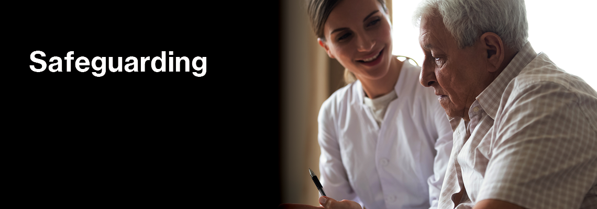

What is Safeguarding?
Safeguarding is the action taken to protect people from harm, abuse, and neglect. It ensures that everyone, especially vulnerable individuals, is safe and protected.
Key Information on Safeguarding
- Definition: Protecting individuals from harm, abuse, and neglect.
- Purpose: To ensure safety and protection for all, especially vulnerable individuals.
- Scope: Applies to everyone—children, adults, and those particularly at risk.
- Responsibility: Everyone shares a duty to safeguard the well-being of others.
- Signs to Watch: Unexplained injuries, withdrawal from social activities, sudden changes in behavior.
- Actions to Take: Report suspicions, support the affected, provide resources and help. 
How to Recognize Safeguarding Concerns
It's important to be able to identify potential signs of harm or abuse. Look out for:
- Unexplained Injuries: Bruises, fractures, or burns that can't be easily explained.
- Sudden Changes in Behavior: Noticeable changes in mood or behavior, such as increased aggression or withdrawal.
- Withdrawal from Social Activities: Avoidance of social interactions or previously enjoyed activities.
- Signs of Neglect: Poor hygiene, inappropriate clothing, or untreated medical issues.
- Emotional Distress: Anxiety, depression, or sudden mood swings.
- Isolation: Being kept away from family, friends, or normal activities.
- Reluctance to Discuss: Hesitation or reluctance to speak about their situation or relationships.

What To Do If You Have Concerns
- Stay Calm: Assess the situation without jumping to conclusions.
- Document Your Concerns: Write down details of what you've noticed, including dates and observations.
- Report: Inform the appropriate authority, such as a supervisor or designated safeguarding officer.
- Follow Up: Ensure action is taken and that the concern is addressed.
VPN Recommendations and Security Tools
CyberShield provides recommendations for VPNs and essential security tools to ensure your digital privacy and security:
- Top VPNs:
- VPN Provider 1: Features, pricing, and benefits.
- VPN Provider 2: Features, pricing, and benefits.
- VPN Provider 3: Features, pricing, and benefits.
What To Do If You Have Concerns
Contact Us